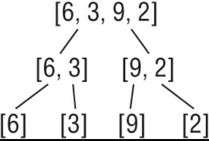

Measuring algorithm performance

Analyzing Algorithms
- One way to judge an algorithm’s performance is by its runtime (wall-clock time). Another method is CPU time (the time the algorithm actually run on the CPU). Neither of these are good practice, as both will vary with each run of the algorithm. Instead, computer scientists compare algorithms by looking at the number of steps they require.
- You can input the number of steps involved in a n algorithm into a formula that can compare two or more algorithms without considering the programming language or computer.
- Let’s take a look at a simple example:
package main
import (
"fmt"
)
func main() {
arr := []int{1,2,3,4,5}
for _, v := range arr {
fmt.Println(v)
}
}
The function above takes 5 steps to complete. You can express this with the following formula:
f(n) = 5
If you make the program more complicated, the formula will change. Let’s say you wanted to keep track of the variables as you printed them:
package main
import (
"fmt"
)
func main() {
var count int = 0
arr := []int{1,2,3,4,5}
for _, v := range arr {
fmt.Println(v)
count += v
}
}
The formula for this program would now be:
f(n) = 11
The program takes 11 steps to complete. It first assigns the count variable the value 0. Then, it prints five numbers and increments five times (1 + 5 + 5 = 11)
It can be hard to determine how many steps a particular algorithm takes, especially in large programs and in functions/methods with many conditional statements. Luckily, you don’t need to care about how many steps an algorithm has. Instead, you should care about how the algorithm performs as n gets bigger.
Because the important part of an algorithm is the part that grows the fastest as n gets bigger, computer scientists use ‘Big O’ notation to express an algorithm’s efficiency instead of a T(n) equation. Big O notation is a mathematical notation that describes how an algorithm’s time or space requirements increase as the size of n increases. Computer scientists use Big O Notation to create an order-of-magnitude function from T(n). An order-of-magnitude is a class in a classification system where each class is many times greater or smaller than the one before. In an order-of-magnitude function, you use the part of T(n) that dominates the equation, and ignore everything else. The part of T(n) that dominates the equation is an algorithm’s order of magnitude.
These are the most commonly used classifications for order of magnitude in Big O Notation, sorted from best (most efficient) to worst (least efficient):
- Constant Time
- Logarithmic time
- Linear time
- Log-Linear time
- Quadratic time
- Cubic time
- Exponential time
Each order of magnitude describes an algorithm’s time complexity. Time complexity is the maximum number of steps an algorithm takes to complete as n get bigger.
Order of magnitude classifications:
Constant Time
- An algorithm runs in constant time when it requires the same number of steps regardless of the problem’s size. The Big O notation for constant time complexity is
O(1). For example, let’s say you own a book store. Each day, you give the first customer of that day a free book. You may track this in a program using the following code:
free_book = customers_for_day[0]
The T(n) equation for this would be T(n) = 1
Your algorithm requires one step, no matter how many customers you have. When you graph a constant time complexity algorithm on a chart with the number of inputs on the x-axis and number of steps on the y-axis, the graph is a flat line.
Logarithmic Time
- The second most efficient time complexity. An algorithm takes logarithmic time when its run time grows in proportion to the logarithm of the input size. You see this in algorithms such as a binary search that can discard many values at each iteration.
- You express a logarithmic function in big O notation
O(log n). - A logarithm is the power that a number needs to be raised to to get some other number. In computer science, the number that we raise to (the base) is always 2 (unless otherwise specified).
Linear Time
- An algorithm that runs in linear time grows at the same rate as the size of the problem.
- You express a linear algorithm in Big O notation
O(n). - Suppose you modify your free book program so that instead of giving a free book to the first customer of the day, you iterate through your list of customers and give all customers who’s name starts with the letter “B” a free book. The list of customers is not sorted. Now you must iterate through the list one by one to find all the customers who’s names start with the letter “B”. When your customer list contains 5 items, your algorithm will take 5 steps. When it contains 10 items, it will take 10 steps, and so on.
Log-Linear Time
- Log-linear time grows as a combination of logarithmic and linear time complexities. For example, a log-linear algorithm might evaluate an O(log n) operation n times. In Big O Notation, you express a log-linear algorithm as O(n log n). Log-Linear algorithms often divide a data set into smaller parts and process each piece independently.
Quadratic Time
- An algorithm runs in quadratic time when its performance is directly proportional to the problem’s size squared. In big O notation, you express this as O(n^2)
- Example:
numbers = [1,2,3,4,5]
for i in numbers:
for j in numbers:
x = i * j
print(x)
- As a general rule, if your algorithm contains two nested loops running from 1 to n, it’s time complexity will be at least O(n^2). Many sorting algorithms such as insertion sort use quadratic time.
Cubic Time
- An algorithm runs in cubic time when its performance is directly proportional to the size of the problem cubed. This is expressed in Big O notation as O(n^3)
- Example:
numbers = [1,2,3,4,5]
for i in numbers:
for j in numbers:
for h in numbers:
x = i + j +
print(x)
Exponential Time
- One of the worst time complexities
- An algorithm that runs in exponential time contains a constant that is raised to the size of the problem.
- Big O Notation: O(c^n)
- Example:
pin = 931
n = len(pin)
for i in range(10**n):
if i == pin:
print(i)
Here we are trying to guess a 3 digit password. When n is 1, the algorithm takes 10 steps. When n is 2, the algorith takes 100 steps. When n is 3, the algorithm takes 1000 steps. It grows quickly.
Search Algorithms
Linear Search
- Iterate through every item in a data set and compare it to the test case
- Time complexity is O(n)
- Consider using a Linear search when the data is not sorted
func linearSearch(numbers []int, value int) bool {
for _, v := range numbers {
if v == value {
return true
}
}
return false
}
func main() {
nums := []int{1,50,34,20,10,54,23,65}
fmt.Println(linearSearch(nums, 34))
}
Binary Search
- Faster than a linear search
- Only works when the data is sorted
- A binary search searches for elements in a list by dividing the list into two halves. The first step is to locate the middle number. You then determine if the number you are looking for is less than or greater than the middle number. If the number you are looking for is greater, you continue searching numbers to the right of the middle number, repeating the process of splitting this new list into two. If the number you are looking for is less, you search the numbers to the left of the middle number, repeating this process.
- Time complexity is O(log n)
func binarySearch(needle int, haystack []int) bool {
low := 0
high := len(haystack) - 1
for low <= high{
median := (low + high) / 2
if haystack[median] < needle {
low = median + 1
}else{
high = median - 1
}
}
if low == len(haystack) || haystack[low] != needle {
return false
}
return true
}
func main(){
items := []int{1,2, 9, 20, 31, 45, 63, 70, 100}
fmt.Println(binarySearch(63, items))
}
Sorting Algorithms
Bubble Sort
Insertion sort
- Insertion sort is a sorting algorithm where you sort a list like you sort a deck of cards. Suppose you have the numbers [ 6,5,8,2 ]. You start with the second number in the list and compare it to the first. Since 5 is less than 6, you move 5 to the first position. You now compare the number in the third position (8) to the number in the second position. Because 8 is greater than 6, 8 does not move. Because you already sorted the first half of the list, you do not need to compare 8 to 5. You then compare the 4th number in the list (2), and because 8 is greater than 2, you go one by one through the sorted left half of the list, comparing 2 to each number until it arrives at the front and the entire list is sorted: 2,5,6,8
- Example:
def insertion_sort(a_list):
for i in range(len(a_list) - 1):
current_position = i + 1
while currrent_postition > 0 and a_list[current_position - 1] > a_list[current_position]:
# swap
a_list[current_position], a_list[current_position - 1] = a_list[current_position - 1], a_list[current_position]
current_position -= 1
return a_list
- Insertion sort is O(n^2), so it is not very efficient
- Insert sort can be efficient on a nearly sorted list
Merge Sort
- A merge sort is a recursive divide-and-conquer sorting algorithm that continually splits a list in half until there are one or more lists containing one item and then puts them back together in the correct order.
Steps:
- If the list is of length 1, return the list as it is already sorted by definition of the merge sort algorithm.
- If the list has more than one item, split the list into two halves.
- Recursively call the merge sort function on both halves.
- Merge the two sorted halves back together into one sorted list by comparing the first

- Lists containing only one item are sorted by definition.
- A merge sort is a ‘divide and conquer’ algorithm. You recursively break a problem into two until they are simple enough to solve easily.
- A merge sort’s time complexity is O(n * log n)
- With log linear time complexity, a merge sort is one of the most efficient sorting algorithms
def merge_sort(nums):
if len(nums) < 2:
return nums
mid = len(nums) // 2
first_half = nums[:mid]
second_half = nums[mid:]
sorted_left_side = merge_sort(first_half)
sorted_right_side = merge_sort(second_half)
return merge(sorted_left_side, sorted_right_side)
def merge(first, second):
final = []
i = 0
j = 0
while i < len(first) and j < len(second):
if first[i] <= second[j]:
final.append(first[i])
i += 1
else:
final.append(second[j])
j += 1
while i < len(first):
final.append(first[i])
i += 1
while j < len(second):
final.append(second[j])
j += 1
return final
Quick Sort
- Like merge sort, quick sort is a recursive divide-and-conquer sorting algorithm. However, instead of splitting the list in half, quick sort selects a ‘pivot’ element from the list and partitions the other elements into two sub-arrays according to whether they are less than or greater than the pivot. The sub-arrays are then sorted recursively.
- Quick sort will sort the list in-pace, requiring small additional amounts of memory to perform the sorting.
- If the list has zero or one element, it is already sorted.
- Quick sort will quickly degrade into O(n^2) time complexity if the pivot elements are poorly chosen. i.e. if the smallest or largest element is always chosen as the pivot in an already sorted list. However, with good pivot selection, quicksort can achieve average time complexity of O(n log n). To ensure good pivot selection, you can use techniques such as choosing the median element or using randomization.
def partition(nums, low, high):
if low < high:
middle = partition(nums, low, high)
quick_sort(nums, low, middle - 1)
quick_sort(nums, middle + 1, high)
def paritition(nums, low, high):
pivot = nums[high] # get the last element in the list
i = low - 1 # pointer for the smaller element
for j in range(low, high):
if nums[j] <= pivot:
i += 1
nums[i], nums[j] = nums[j], nums[i] # swap
nums[i + 1], nums[high] = nums[high], nums[i + 1] # swap pivot element
return i + 1
Selection Sort
- Selection sort is similar to bubble sort in that it repeatedly swaps items in a list. However, it’s slightly more performant as it only makes one swap per iteration of the outer loop.
def selection_sort(a_list):
for i in range(len(a_list)):
smallest_index = i
for j in range(i + 1, len(a_list)):
if a_list[j] < a_list[smallest_index]:
smallest_index = j
a_list[i], a_list[smallest_index] = a_list[smallest_index], a_list[i] # swap
Polynomial vs Exponential Time Complexity
- Broadly speaking, algorithms can be classified into two categories based on their time complexity: polynomial time and exponential time.
- Algorithm runs in Polynomial time if its runtime does not grow faster than n^k, where k is any constant (e.g. n^2, n^3, n^4, etc.) and n is the size of the input. Polynomial time algorithms can be useful if they are not too slow.
- Exponential time algorithms are almost always too slow to be practical.
- The name for the set of Polynomial time algorithms is “P”. Problems that can be solved by polynomial time algorithms are called “tractable” problems. Problems that cannot be solved by polynomial time algorithms are called “intractable” problems.
Non-Deterministic Polynomial Time (NP)
- Non-deterministic polynomial time (NP) is a complexity describing a set of problems that can be verified in polynomial time but not necessarily solved in polynomial time.
Examples
package main
func main() {
}
// O(1) describes an algorithm that will always execute in the same time (or space) regardless of the size of the input data set.
func returnFalse() bool {
return false
}
// O(N) describes an algorithm whose performance will grow linearly and in direct proportion to the size of the input data set. The example below also demonstrates how Big O favours the worst-case performance scenario; a matching string could be found during any iteration of the for loop and the function would return early, but Big O notation will always assume the upper limit where the algorithm will perform the maximum number of iterations.
func containsValue(value int, intSlice []int) bool {
for r := range intSlice {
if r == value {
return true
}
}
return false
}
// O(N²) represents an algorithm whose performance is directly proportional to the square of the size of the input data set. This is common with algorithms that involve nested iterations over the data set. Deeper nested iterations will result in O(N³), O(N⁴) etc.
func containsDuplicates(vals []string) bool {
for i := 0; i < len(vals); i++ {
for j := 0; j < len(vals); j++ {
if i == j {
continue
}
if vals[i] == vals[j] {
return true
}
}
}
return false
}
// O(2^N) denotes an algorithm whose growth doubles with each addition to the input data set. The growth curve of an O(2^N) function is exponential — starting off very shallow, then rising meteorically. An example of an O(2^N) function is the recursive calculation of Fibonacci numbers:
func Fibonacci(number int) int {
if number <= 1 {
return number
}
return Fibonacci(number-2) + Fibonacci(number-1)
}